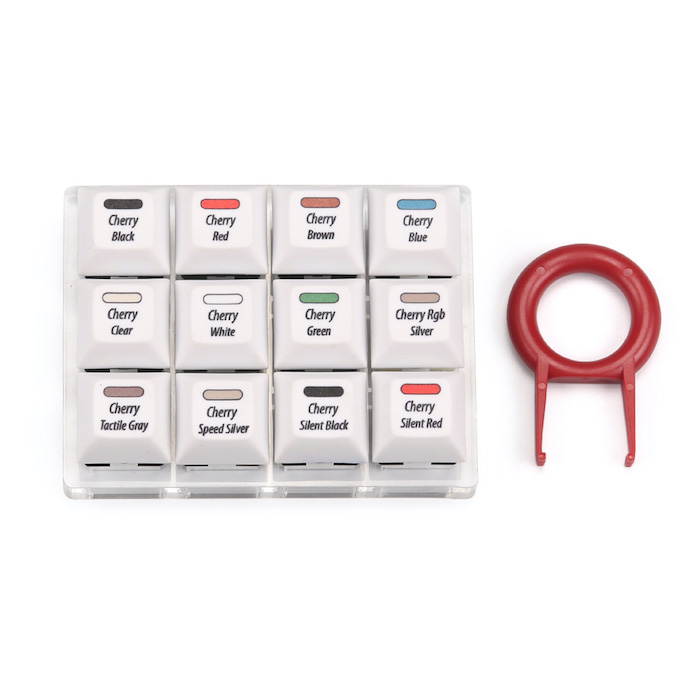
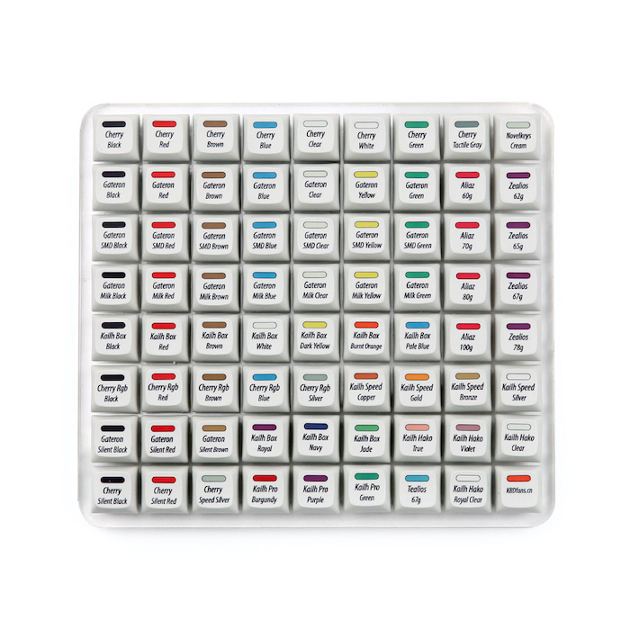

Very old and traditional key switches...
(Cherry inc.)
It it not until the 21st that this mechanical keyboard renaissance come into our sight: alone with
the development of the games and so called E-Sports,people starting to realise that using mechanical
keyboard has shorter “bounce back time” and thus leads to more stable gaming performance (or it could
be just a commercial fraud idk). Cherry, one of the German computer peripheral device maker, invented
and announced their cherry mx switches in 1985, including cherry mx red, mx black, mx blue, each with
different tactile feeling and actuation force become popular. (Nothing that there is actually Cherry
red/ black and blue, what differs them from the mx series is the the numbers of switch pins, providing
more stable presses). If you are intersted in even earlier histroy, please see
keyboard histroy.
Cherry Switches

(Click on switches will direct you to its sale site)
A world full of new comers...
(Kailh, Gateron, etc)
The market realized this growing business so other companies also started to build similar
switches, wishing they could duplicate the success of cherry. There's more experienced companies
including HHKB, funded by professor Eiiti Wada from Tokyo University in Japan, their rubber dome
switch keyboard are now known for programmer friendly, due to their silence and layout. And new comers
such as Kailh, Gateron Logitech and Razer, some mocks the good old cherry switches and do some minor c
hanges, some invents whole new switches (Romer-G Mechanical switches by Logitech or Optical switches
by Razer)
New Switches

(Click on switches will direct you to company's site)
Reference
Tons of thanks for KBDFANS for providing the image material.
They are one of the Cinese companies who
started on the keyboard bussiness overseas and have done a greate job gathering us fans, they sell customoized keyboards,
ranging from case, pcb, switches
and key caps, to ARTKEYS.
I would strongly recommend you to take at look on their site if you are into the custom keyboard!
For more detailed reference/ source log, please go here